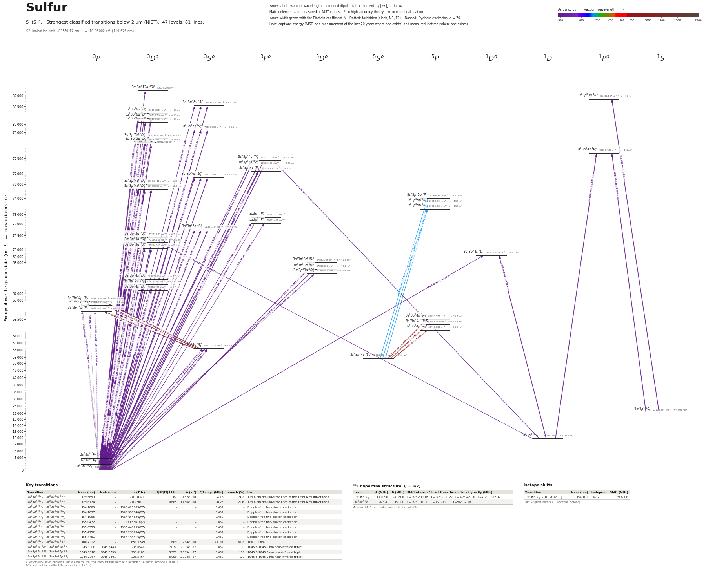

Sulfur energy level diagram
Energy levels and transitions of neutral sulfur (S I): the 81 strongest classified lines below 2 µm from the NIST Atomic Spectra Database and the 47 levels they connect, each line with its vacuum wavelength, frequency and, for 73 of them, the reduced dipole matrix element derived from the NIST transition rate. Measured lifetimes, transition rates, hyperfine constants and isotope shifts from the literature are included, each with its citation.
Hover a line or a level to isolate it, click to keep it selected. Scroll to zoom, drag to move.

Download: diagram (PDF) diagram (SVG) transitions (CSV) levels (CSV) source code

Key transitions of sulfur
| Transition | λ vac (nm) | λ air (nm) | ν (THz) | |⟨J‖er‖J′⟩| (ea₀) | A (s⁻¹) | Γ/2π up. (MHz) | branch (%) | Use |
|---|---|---|---|---|---|---|---|---|
| 3s23p4 3P2 – 3s23p34s 3P°2 | 129.5653 | – | 2313.8321 | 1.362 | 3.457e+08 | 74.16 | 74.2 | 129.6 nm ground-state lines of the 1299 A multiplet used… |
| 3s23p4 3P2 – 3s23p34s 3P°1 | 129.6174 | – | 2312.9033 | 0.685 | 1.456e+08 | 78.25 | 29.6 | 129.6 nm ground-state lines of the 1299 A multiplet used… |
| 3s23p4 3P2 – 3s23p34p 3P2 | 154.1009 | – | 1945.429689(27) | – | – | 3.452 | – | Doppler-free two-photon excitation |
| 3s23p4 3P2 – 3s23p34p 3P0 | 154.1037 | – | 1945.393840(27) | – | – | 3.452 | – | Doppler-free two-photon excitation |
| 3s23p4 3P2 – 3s23p34p 3P1 | 154.1095 | – | 1945.321233(27) | – | – | 3.452 | – | Doppler-free two-photon excitation |
| 3s23p4 3P1 – 3s23p34p 3P2 | 155.0472 | – | 1933.55618(7) | – | – | 3.452 | – | Doppler-free two-photon excitation |
| 3s23p4 3P1 – 3s23p34p 3P1 | 155.0559 | – | 1933.447755(27) | – | – | 3.452 | – | Doppler-free two-photon excitation |
| 3s23p4 3P0 – 3s23p34p 3P2 | 155.4752 | – | 1928.233794(27) | – | – | 3.452 | – | Doppler-free two-photon excitation |
| 3s23p4 3P0 – 3s23p34p 3P0 | 155.4781 | – | 1928.197819(27) | – | – | 3.452 | – | Doppler-free two-photon excitation |
| 3s23p4 3P2 – 3s23p34s 3S°1 | 180.7312 | – | 1658.7749 | 1.689 | 3.264e+08 | 84.88 | 61.2 | 180.731 nm |
| 3s23p34s 3S°1 – 3s23p34p 3P2 | 1045.8308 | 1045.5443 | 286.6548 | 7.872 | 2.195e+07 | 3.452 | 100 | 1045.5-1045.9 nm near-infrared triplet |
| 3s23p34s 3S°1 – 3s23p34p 3P0 | 1045.9618 | 1045.6753 | 286.6189 | 3.521 | 2.195e+07 | 3.452 | 100 | 1045.5-1045.9 nm near-infrared triplet |
| 3s23p34s 3S°1 – 3s23p34p 3P1 | 1046.2267 | 1045.9401 | 286.5464 | 6.099 | 2.194e+07 | 3.452 | 100 | 1045.5-1045.9 nm near-infrared triplet |
λ, ν from NIST level energies unless a measured frequency for this isotope is available. A: measured value or NIST. Γ/2π: natural linewidth of the upper level, 1/(2πτ).
33S hyperfine structure (I = 3/2)
| Level | A (MHz) | B (MHz) | Shift of each F level from the centre of gravity (MHz) |
|---|---|---|---|
| 3s23p4 3P2 | 130.090 | -31.600 | F=1/2: -613.05 F=3/2: -390.27 F=5/2: -45.30 F=7/2: +382.37 |
| 3s23p4 3P1 | -4.620 | 15.800 | F=1/2: +31.30 F=3/2: -11.18 F=5/2: -2.98 |
Measured A, B constants; sources in the data file.
Isotope shifts
| Transition | λ vac (nm) | Isotopes | Shift (MHz) |
|---|---|---|---|
| 3s23p4 3P2 – 3s23p34p 3P2 | 154.101 | 34-32 | 537(12) |
Shift = ν(first isotope) − ν(second isotope).
Closed and nearly closed transitions of sulfur
| Transition | λ vacuum (nm) | Lower level | A (s⁻¹) | Leak per scattered photon | Photons before a leak | Where the leak goes |
|---|---|---|---|---|---|---|
| 3s23p4 3P2 → 3s23p34s 3D°3 | 147.3995 | ground | 1.960e+08 NIST | ≥ 9.22 × 10−4 from theory | ≤ 1,080 | 3s23p4 1D2 9.23 × 10−4* (long-lived); 3 more possible paths without a listed rate |
| 3s23p4 3P2 → 3s23p33d 3D°3 | 142.5031 | ground | 3.790e+08 NIST | ≥ 1.59 % from NIST data | ≤ 63 | 3s23p34p 3P2 1.59 %; 3 more possible paths without a listed rate |
A transition is closed when its upper level can decay only to the level it was excited from, so the atom keeps scattering photons. “closed”: among the levels NIST lists, no other level below the upper level has the opposite parity and |ΔJ| ≤ 1, so no other electric-dipole decay exists. Otherwise the leak is the sum of the branching ratios of the other decay lines of the upper level (or 1 − branching ratio where that of the line itself has been measured), and the number of photons is 1 / leak. “≥” and “≤”: at least one possible decay path has no listed rate, so the leak is a lower limit. These numbers are derived from the branching ratios, lifetimes and rates of this page, not measured as such; the tag names the weakest of the inputs, * marks theory and ≈ a model calculation. Listed: lines that start on the ground level or on a metastable level and leak at most 10 %, unless more than three possible decay paths have no listed rate. Fine-structure levels only: hyperfine and Zeeman dark states and forbidden decays without a listed rate are not considered. Select a line in the diagram for the full list of its leak channels.
Listed S transitions below 2 µm
| Lower level | Upper level | λ vacuum (nm) | λ air (nm) | ν (THz) | Type | |⟨J‖er‖J′⟩| (ea₀) | A (s⁻¹) | Branching (%) | Source of matrix element / A |
|---|---|---|---|---|---|---|---|---|---|
| 3s23p4 3P2 | 3s23p312d 3D°3 | 120.8850 | – | 2479.9806 | E1 | 0.163 NIST | 4.330e+06 NIST | – | NIST ASD (accuracy E) |
| 3s23p4 3P2 | 3s23p38s 3S°1 | 124.1905 | – | 2413.9726 | E1 | 0.186 NIST | 1.220e+07 NIST | 48.8 | NIST ASD (accuracy D+) |
| 3s23p4 3P2 | 3s23p36d 3D°1 | 124.7108 | – | 2403.9011 | E1 | – | – | – | – |
| 3s23p4 3P2 | 3s23p36d 3D°2 | 124.7136 | – | 2403.8472 | E1 | 0.116 NIST | 2.820e+06 NIST | 21.1 | NIST ASD (accuracy D+) |
| 3s23p4 3P2 | 3s23p36d 3D°3 | 124.7160 | – | 2403.8013 | E1 | 0.302 NIST | 1.360e+07 NIST | 100 | NIST ASD (accuracy D+) |
| 3s23p4 3P1 | 3s23p38s 3S°1 | 124.8044 | – | 2402.0992 | E1 | 0.147 measured | 7.464e+06 measured | 29.9 | Biemont, Garnir, Federman, Li, Svanberg, Astrophys. J. 502, 1010 (1998), Table 2, column … |
| 3s23p4 3P0 | 3s23p38s 3S°1 | 125.0815 | – | 2396.7767 | E1 | 0.0878 NIST | 2.660e+06 NIST | 10.6 | NIST ASD (accuracy D) |
| 3s23p4 3P1 | 3s23p36d 3D°1 | 125.3298 | – | 2392.0276 | E1 | 0.124 NIST | 5.290e+06 NIST | 39.7 | NIST ASD (accuracy D+) |
| 3s23p4 3P1 | 3s23p36d 3D°2 | 125.3327 | – | 2391.9737 | E1 | 0.228 NIST | 1.070e+07 NIST | 80.2 | NIST ASD (accuracy D+) |
| 3s23p4 3P0 | 3s23p36d 3D°1 | 125.6093 | – | 2386.7051 | E1 | 0.153 NIST | 7.980e+06 NIST | 59.9 | NIST ASD (accuracy D+) |
| 3s23p4 3P2 | 3s23p37s 3S°1 | 126.2860 | – | 2373.9171 | E1 | 0.210 NIST | 1.480e+07 NIST | 52.7 | NIST ASD (accuracy D+) |
| 3s23p4 3P1 | 3s23p37s 3S°1 | 126.9208 | – | 2362.0436 | E1 | 0.157 NIST | 8.180e+06 NIST | 29.1 | NIST ASD (accuracy D+) |
| 3s23p4 3P2 | 3s23p35d 3D°1 | 127.0768 | – | 2359.1435 | E1 | 0.0481 NIST | 7.600e+05 NIST | 3.14 | NIST ASD (accuracy D) |
| 3s23p4 3P2 | 3s23p35d 3D°3 | 127.0780 | – | 2359.1221 | E1 | 0.424 NIST | 2.540e+07 NIST | 100 | NIST ASD (accuracy C) |
| 3s23p4 3P2 | 3s23p35d 3D°2 | 127.0786 | – | 2359.1097 | E1 | 0.184 NIST | 6.700e+06 NIST | – | NIST ASD (accuracy D+) |
| 3s23p4 3P0 | 3s23p37s 3S°1 | 127.2074 | – | 2356.7211 | E1 | 0.0894 NIST | 2.620e+06 NIST | 9.33 | NIST ASD (accuracy D) |
| 3s23p4 3P1 | 3s23p35d 3D°1 | 127.7196 | – | 2347.2700 | E1 | 0.180 NIST | 1.050e+07 NIST | 43.4 | NIST ASD (accuracy D+) |
| 3s23p4 3P1 | 3s23p35d 3D°2 | 127.7215 | – | 2347.2362 | E1 | 0.308 NIST | 1.840e+07 NIST | – | NIST ASD (accuracy D+) |
| 3s23p4 3P0 | 3s23p35d 3D°1 | 128.0099 | – | 2341.9475 | E1 | 0.205 NIST | 1.350e+07 NIST | 55.8 | NIST ASD (accuracy D+) |
| 3s23p4 3P2 | 3s23p34s 3P°2 | 129.5653 | – | 2313.8321 | E1 | 1.362 measured | 3.457e+08 measured | 74.2 | Beideck, Schectman, Federman, Ellis, Astrophys. J. 428, 393 (1994), beam-foil spectroscop… |
| 3s23p4 3P2 | 3s23p34s 3P°1 | 129.6174 | – | 2312.9033 | E1 | 0.685 measured | 1.456e+08 measured | 29.6 | Beideck, Schectman, Federman, Ellis, Astrophys. J. 428, 393 (1994), beam-foil spectroscop… |
| 3s23p4 3P1 | 3s23p34s 3P°2 | 130.2336 | – | 2301.9586 | E1 | 0.810 measured | 1.203e+08 measured | 25.8 | Beideck, Schectman, Federman, Ellis, Astrophys. J. 428, 393 (1994), beam-foil spectroscop… |
| 3s23p4 3P1 | 3s23p34s 3P°1 | 130.2862 | – | 2301.0298 | E1 | 0.709 measured | 1.533e+08 measured | 31.2 | Beideck, Schectman, Federman, Ellis, Astrophys. J. 428, 393 (1994), beam-foil spectroscop… |
| 3s23p4 3P1 | 3s23p34s 3P°0 | 130.3110 | – | 2300.5921 | E1 | 0.726 NIST | 4.830e+08 NIST | 100 | NIST ASD (accuracy C) |
| 3s23p4 3P2 | 3s23p36s 3S°1 | 130.3429 | – | 2300.0283 | E1 | 0.311 NIST | 2.950e+07 NIST | 52.2 | NIST ASD (accuracy D+) |
| 3s23p4 3P0 | 3s23p34s 3P°1 | 130.5883 | – | 2295.7073 | E1 | 0.803 measured | 1.956e+08 measured | 39.8 | Beideck, Schectman, Federman, Ellis, Astrophys. J. 428, 393 (1994), beam-foil spectroscop… |
| 3s23p4 3P1 | 3s23p36s 3S°1 | 131.0193 | – | 2288.1548 | E1 | 0.238 NIST | 1.700e+07 NIST | 30.1 | NIST ASD (accuracy D+) |
| 3s23p4 3P0 | 3s23p36s 3S°1 | 131.3248 | – | 2282.8323 | E1 | 0.136 NIST | 5.540e+06 NIST | 9.81 | NIST ASD (accuracy D+) |
| 3s23p4 3P2 | 3s23p34d 3D°3 | 131.6545 | – | 2277.1159 | E1 | 0.789 NIST | 7.890e+07 NIST | 100 | NIST ASD (accuracy C) |
| 3s23p4 3P2 | 3s23p34d 3D°2 | 131.6616 | – | 2276.9925 | E1 | 0.344 NIST | 2.100e+07 NIST | 26.2 | NIST ASD (accuracy C) |
| 3s23p4 3P2 | 3s23p34d 3D°1 | 131.6625 | – | 2276.9771 | E1 | 0.0895 NIST | 2.370e+06 NIST | 2.99 | NIST ASD (accuracy D) |
| 3s23p4 3P1 | 3s23p34d 3D°2 | 132.3517 | – | 2265.1190 | E1 | 0.588 NIST | 6.040e+07 NIST | 75.5 | NIST ASD (accuracy C) |
| 3s23p4 3P1 | 3s23p34d 3D°1 | 132.3526 | – | 2265.1036 | E1 | 0.342 NIST | 3.400e+07 NIST | 42.8 | NIST ASD (accuracy C) |
| 3s23p4 3P0 | 3s23p34d 3D°1 | 132.6644 | – | 2259.7811 | E1 | 0.392 NIST | 4.440e+07 NIST | 55.9 | NIST ASD (accuracy C) |
| 3s23p4 3P2 | 3s3p5 3P°1 | 138.1553 | – | 2169.9669 | E1 | 0.046 NIST | 5.420e+05 NIST | – | NIST ASD (accuracy D) |
| 3s23p4 3P2 | 3s3p5 3P°2 | 138.8436 | – | 2159.2093 | E1 | 0.0605 NIST | 5.540e+05 NIST | – | NIST ASD (accuracy D) |
| 3s23p4 3P1 | 3s3p5 3P°2 | 139.6113 | – | 2147.3359 | E1 | 0.0621 NIST | 5.750e+05 NIST | – | NIST ASD (accuracy D) |
| 3s23p4 3P2 | 3s23p35s 3S°1 | 140.1515 | – | 2139.0601 | E1 | 0.552 NIST | 7.480e+07 NIST | 53.1 | NIST ASD (accuracy C) |
| 3s23p4 3P1 | 3s23p35s 3S°1 | 140.9338 | – | 2127.1866 | E1 | 0.425 NIST | 4.350e+07 NIST | 30.9 | NIST ASD (accuracy C) |
| 3s23p4 3P0 | 3s23p35s 3S°1 | 141.2873 | – | 2121.8641 | E1 | 0.243 NIST | 1.420e+07 NIST | 10.1 | NIST ASD (accuracy D+) |
| 3s23p4 3P2 | 3s23p33d 3D°3 | 142.5031 | – | 2103.7616 | E1 | 1.947 NIST | 3.790e+08 NIST | 79.6 | NIST ASD (accuracy C+) |
| 3s23p4 3P2 | 3s23p33d 3D°2 | 142.5189 | – | 2103.5283 | E1 | 0.823 NIST | 9.480e+07 NIST | 19.9 | NIST ASD (accuracy C) |
| 3s23p4 3P2 | 3s23p33d 3D°1 | 142.5220 | – | 2103.4821 | E1 | 0.212 NIST | 1.050e+07 NIST | 2.21 | NIST ASD (accuracy D+) |
| 3s23p4 3P1 | 3s23p33d 3D°2 | 143.3279 | – | 2091.6549 | E1 | 1.429 NIST | 2.810e+08 NIST | 59 | NIST ASD (accuracy C+) |
| 3s23p4 3P1 | 3s23p33d 3D°1 | 143.3310 | – | 2091.6086 | E1 | 0.825 NIST | 1.560e+08 NIST | 32.8 | NIST ASD (accuracy C) |
| 3s23p4 3P0 | 3s23p33d 3D°1 | 143.6967 | – | 2086.2861 | E1 | 0.954 NIST | 2.070e+08 NIST | 43.5 | NIST ASD (accuracy C) |
| 3s23p4 3P2 | 3s23p34s 1D°2 | 144.4296 | – | 2075.6992 | E1 (intercombination) | 0.139 NIST | 2.590e+06 NIST | 0.389 | NIST ASD (accuracy D+) |
| 3s23p4 1D2 | 3s23p34s 1P°1 | 144.8230 | – | 2070.0616 | E1 | 1.500 NIST | 5.000e+08 NIST | 80.2 | NIST ASD (accuracy D+) |
| 3s23p4 1D2 | 3s23p34s 3P°2 | 147.1832 | – | 2036.8655 | E1 (intercombination) | 0.140 NIST | 2.490e+06 NIST | 0.534 | NIST ASD (accuracy D+) |
| 3s23p4 3P2 | 3s23p33d 5D°3 | 147.2971 | – | 2035.2909 | E1 (intercombination) | 0.642 NIST | 3.730e+07 NIST | 100 | NIST ASD (accuracy D+) |
| 3s23p4 3P2 | 3s23p34s 3D°3 | 147.3995 | – | 2033.8773 | E1 | 1.473 NIST | 1.960e+08 NIST | 100 | NIST ASD (accuracy C+) |
| 3s23p4 3P2 | 3s23p34s 3D°2 | 147.4379 | – | 2033.3473 | E1 | 0.621 NIST | 4.880e+07 NIST | 34.3 | NIST ASD (accuracy C) |
| 3s23p4 3P2 | 3s23p34s 3D°1 | 147.4571 | – | 2033.0822 | E1 | 0.160 NIST | 5.390e+06 NIST | 3.67 | NIST ASD (accuracy D+) |
| 3s23p4 3P1 | 3s23p33d 5D°2 | 148.1663 | – | 2023.3510 | E1 (intercombination) | 0.236 NIST | 6.950e+06 NIST | 54.7 | NIST ASD (accuracy E) |
| 3s23p4 3P1 | 3s23p34s 3D°2 | 148.3039 | – | 2021.4739 | E1 | 1.077 NIST | 1.440e+08 NIST | 100 | NIST ASD (accuracy C+) |
| 3s23p4 3P1 | 3s23p34s 3D°1 | 148.3234 | – | 2021.2087 | E1 | 0.621 NIST | 7.990e+07 NIST | 54.3 | NIST ASD (accuracy C) |
| 3s23p4 3P0 | 3s23p33d 5D°1 | 148.5621 | – | 2017.9604 | E1 (intercombination) | 0.106 NIST | 2.320e+06 NIST | 35.7 | NIST ASD (accuracy D+) |
| 3s23p4 3P0 | 3s23p34s 3D°1 | 148.7150 | – | 2015.8862 | E1 | 0.719 NIST | 1.060e+08 NIST | 72.1 | NIST ASD (accuracy C) |
| 3s23p4 3P2 | 3s23p34p 3P2 | 154.1009 | – | 1945.4297 | two-photon | – | – | – | – |
| 3s23p4 3P2 | 3s23p34p 3P0 | 154.1037 | – | 1945.3938 | two-photon | – | – | – | – |
| 3s23p4 3P2 | 3s23p34p 3P1 | 154.1095 | – | 1945.3212 | two-photon | – | – | – | – |
| 3s23p4 3P1 | 3s23p34p 3P2 | 155.0472 | – | 1933.5562 | two-photon | – | – | – | – |
| 3s23p4 3P1 | 3s23p34p 3P1 | 155.0559 | – | 1933.4478 | two-photon | – | – | – | – |
| 3s23p4 3P0 | 3s23p34p 3P2 | 155.4752 | – | 1928.2338 | two-photon | – | – | – | – |
| 3s23p4 3P0 | 3s23p34p 3P0 | 155.4781 | – | 1928.1978 | two-photon | – | – | – | – |
| 3s23p4 1D2 | 3s23p33d 3D°2 | 164.1294 | – | 1826.5618 | E1 (intercombination) | 0.0885 NIST | 7.180e+05 NIST | 0.151 | NIST ASD (accuracy D+) |
| 3s23p4 1D2 | 3s23p34s 1D°2 | 166.6687 | – | 1798.7326 | E1 | 2.288 NIST | 4.580e+08 NIST | 68.7 | NIST ASD (accuracy C+) |
| 3s23p4 1S0 | 3s23p33d 1P°1 | 168.7530 | – | 1776.5165 | E1 | 0.701 NIST | 6.900e+07 NIST | 100 | NIST ASD (accuracy D) |
| 3s23p4 1S0 | 3s23p34s 1P°1 | 178.2262 | – | 1682.0898 | E1 | 0.986 NIST | 1.160e+08 NIST | 18.6 | NIST ASD (accuracy D) |
| 3s23p4 3P2 | 3s23p34s 3S°1 | 180.7312 | – | 1658.7749 | E1 | 1.689 measured | 3.264e+08 measured | 61.2 | Beideck, Schectman, Federman, Ellis, Astrophys. J. 428, 393 (1994), beam-foil spectroscop… |
| 3s23p4 3P1 | 3s23p34s 3S°1 | 182.0342 | – | 1646.9014 | E1 | 1.233 measured | 1.701e+08 measured | 31.9 | Beideck, Schectman, Federman, Ellis, Astrophys. J. 428, 393 (1994), beam-foil spectroscop… |
| 3s23p4 3P0 | 3s23p34s 3S°1 | 182.6245 | – | 1641.5789 | E1 | 0.713 NIST | 5.640e+07 NIST | 6.9 | NIST ASD (accuracy C) |
| 3s23p34s 5S°2 | 3s23p35p 5P3 | 469.5422 | 469.4108 | 638.4782 | E1 | 0.547 NIST | 8.370e+05 NIST | 51.5 | NIST ASD (accuracy D) |
| 3s23p34s 5S°2 | 3s23p35p 5P2 | 469.6753 | 469.5439 | 638.2973 | E1 | 0.456 NIST | 8.140e+05 NIST | 12.9 | NIST ASD (accuracy D) |
| 3s23p34s 5S°2 | 3s23p35p 5P1 | 469.7563 | 469.6249 | 638.1872 | E1 | 0.351 NIST | 8.010e+05 NIST | 12.8 | NIST ASD (accuracy D) |
| 3s23p34s 5S°2 | 3s23p34p 5P3 | 921.5382 | 921.2854 | 325.3175 | E1 | 8.685 NIST | 2.790e+07 NIST | 100 | NIST ASD (accuracy C) |
| 3s23p34s 5S°2 | 3s23p34p 5P2 | 923.0617 | 922.8085 | 324.7805 | E1 | 7.332 NIST | 2.770e+07 NIST | 100 | NIST ASD (accuracy C) |
| 3s23p34s 5S°2 | 3s23p34p 5P1 | 924.0066 | 923.7531 | 324.4484 | E1 | 5.688 NIST | 2.770e+07 NIST | 100 | NIST ASD (accuracy C) |
| 3s23p34s 3S°1 | 3s23p34p 3P2 | 1045.8308 | 1045.5443 | 286.6548 | E1 | 7.872 measured | 2.195e+07 measured | 100 | Zerne, Luo Caiyan, Berzinsh, Svanberg, Phys. Scr. 56, 459 (1997), two-photon UV excitatio… |
| 3s23p34s 3S°1 | 3s23p34p 3P0 | 1045.9618 | 1045.6753 | 286.6189 | E1 | 3.521 measured | 2.195e+07 measured | 100 | Zerne, Luo Caiyan, Berzinsh, Svanberg, Phys. Scr. 56, 459 (1997), two-photon UV excitatio… |
| 3s23p34s 3S°1 | 3s23p34p 3P1 | 1046.2267 | 1045.9401 | 286.5464 | E1 | 6.099 measured | 2.194e+07 measured | 100 | Zerne, Luo Caiyan, Berzinsh, Svanberg, Phys. Scr. 56, 459 (1997), two-photon UV excitatio… |
Reduced dipole matrix elements follow the convention A = ω³|d|²/(3πε₀ħc³(2J′+1)), with J′ the upper level. Tags show where a number comes from: measured, NIST compilation, high-accuracy theory, or a model calculation.
S energy levels
S⁺ ionisation limit 83559.17 cm⁻¹ = 10.36002 eV (119.676 nm)
Sources
- Beideck, Schectman, Federman, Ellis, Astrophys. J. 428, 393 (1994), beam-foil spectroscop…
- Beideck, Schectman, Federman, Ellis, Astrophys. J. 428, 393 (1994), beam-foil spectroscop…
- Beideck, Schectman, Federman, Ellis, Astrophys. J. 428, 393 (1994), beam-foil spectroscop…
- Beideck, Schectman, Federman, Ellis, Astrophys. J. 428, 393 (1994), beam-foil spectroscop…
- Berzinsh, Luo Caiyan, Zerne, Svanberg, Biemont, Phys. Rev. A 55, 1836 (1997), time-resolv…
- Biemont, Garnir, Federman, Li, Svanberg, Astrophys. J. 502, 1010 (1998), Table 1 (entries…
- Biemont, Garnir, Federman, Li, Svanberg, Astrophys. J. 502, 1010 (1998), Table 1 (entries…
- Biemont, Garnir, Federman, Li, Svanberg, Astrophys. J. 502, 1010 (1998), Table 2, column …
- Carette & Godefroid, J. Phys. B 44, 105001 (2011), arXiv:1101.5645, MCHF/CI with relativi…
- Delalic, Erman, Kallne, Phys. Scr. 42, 540 (1990), high-frequency deflection technique; v…
- Lai, Salumbides, Ubachs, J. Phys. B 53, 175002 (2020), arXiv:2006.11322, Doppler-free two…
- NIST ASD
- NIST ASD S I lines table (tp_ref T8595,T7942c84), local cache data/nist/S_I_lines_from1nm…
- NIST ASD S I lines table (tp_ref T8595,T7942c84), local cache data/nist/S_I_lines_from1nm…
- NIST ASD level energies
- Savage & Lawrence, Astrophys. J. 146, 940 (1966), phase-shift method, Table 1 (3p4 1D - 4…
- Savage & Lawrence, Astrophys. J. 146, 940 (1966), phase-shift method, Table 1: line 1687.…
- Savage & Lawrence, Astrophys. J. 146, 940 (1966), phase-shift method, Table 1; lifetime o…
- Zatsarinny & Bartschat, J. Phys. B 39, 2861 (2006), B-spline R-matrix calculation; level-…
- Zerne, Luo Caiyan, Berzinsh, Svanberg, Phys. Scr. 56, 459 (1997), two-photon UV excitatio…
- Zerne, Luo Caiyan, Berzinsh, Svanberg, Phys. Scr. 56, 459 (1997), two-photon UV excitatio…
- relativistic Hartree-Fock, Biemont, Garnir, Federman, Li, Svanberg, Astrophys. J. 502, 10…
Level energies are the NIST ASD values (data/nist/S_I_levels.tsv). Uncertainties copied from Biemont et al. 1998 Table 1 are 2 sigma ('b represents a 2 sigma uncertainty'); Beideck et al. 1994 uncertainties are 1 sigma as printed in the original (Biemont et al. list them doubled). Lifetimes attributed to Berzinsh et al. 1997, Delalic et al. 1990, Bridges & Wiese, Smith 1978, Mueller 1968, Federman & Cardelli 1995 are second-hand (method 'compilation'). The Federman & Cardelli 'lifetimes' are inferred from interstellar absorption f-values, not laboratory lifetimes. Savage & Lawrence values are multiplet lifetimes attached to each fine-structure level. A-values of the 3P - ns 3S°, nd 3D° lines from Biemont et al. are semi-empirical (measured lifetime x calculated branching ratio); they are close to what NIST ASD already lists. 'f_abs' (absorption oscillator strength) is a non-schema field; type 'two-photon' is used for the Doppler-free two-photon lines (frequency = total energy of both photons). 32S and 34S have I = 0; 33S has I = 3/2. Lifetimes of 1D2 and 1S0 are derived from calculated A-values (theory).
Atoms with measured data
- Lithium-632 levels, 85 lines
- Lithium-732 levels, 85 lines
- Beryllium-917 levels, 26 lines
- Sodium-2336 levels, 106 lines
- Magnesium-2418 levels, 61 lines
- Magnesium-2518 levels, 61 lines
- Potassium-3934 levels, 84 lines
- Potassium-4034 levels, 84 lines
- Potassium-4134 levels, 84 lines
- Calcium-4035 levels, 61 lines
- Calcium-4335 levels, 61 lines
- Chromium-5256 levels, 87 lines
- Chromium-5356 levels, 87 lines
- Rubidium-8536 levels, 94 lines
- Rubidium-8736 levels, 94 lines
- Strontium-8440 levels, 70 lines
- Strontium-8640 levels, 70 lines
- Strontium-8740 levels, 70 lines
- Strontium-8840 levels, 70 lines
- Cadmium-11115 levels, 21 lines
- Cadmium-11315 levels, 21 lines
- Cadmium-11415 levels, 21 lines
- Caesium-13331 levels, 79 lines
- Barium-13744 levels, 89 lines
- Barium-13844 levels, 89 lines
- Dysprosium-16139 levels, 55 lines
- Dysprosium-16239 levels, 55 lines
- Dysprosium-16339 levels, 55 lines
- Dysprosium-16439 levels, 55 lines
- Erbium-16673 levels, 90 lines
- Erbium-16773 levels, 90 lines
- Erbium-16873 levels, 90 lines
- Thulium-16972 levels, 73 lines
- Ytterbium-17118 levels, 26 lines
- Ytterbium-17318 levels, 26 lines
- Ytterbium-17418 levels, 26 lines
- Mercury-19927 levels, 47 lines
- Mercury-20127 levels, 47 lines
- Mercury-20227 levels, 47 lines